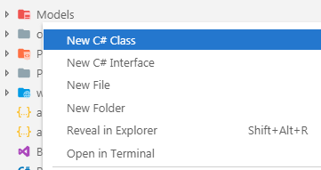

在 .NET 应用程序中调用数据时，您可以选择。 您可以在记录集或数据集结构中在应用程序中移动数据，也可以将应用程序所关注的事物（或实体）表示为类，并可以将这些实例用作容器来存储数据库中各行数据。
建议使用第二种方法，因为它使您能够以强类型的方式处理数据-这具有提供编译时检查的双重好处，从而减少了运行时错误，并且（希望）质量更高。 推理和维护代码时，
将一条数据表示为 Person.FirstName 而不是 ds.Tables[0].Rows[0]["FirstName"]，
这要容易得多，这是您访问代码的方式 ADO.NET DataSet 对象中的数据项。
总的来说，应用程序实体的代码表示形式称为模型。 面包店应用程序当前与第四咖啡店出售的产品有关，因此该模型包括一类：Product。
创建模型
将一个新文件夹添加到名为 Models 的应用程序的根目录中。 如果已安装“C＃扩展”扩展，请右键单击该文件夹，然后选择 新建 C＃类：

出现提示时，在对话框中将该类命名为 Product，然后按 Enter。 生成的文件应具有以下内容：
namespace Bakery.Models
{
public class Product
{
}
}
将以下突出显示的行添加到 Product 类：
namespace Bakery.Models
{
public class Product
{
public int Id { get; set; }
public string Name { get; set; }
public string Description { get; set; }
public decimal Price { get; set; }
public string ImageName { get; set; }
}
}
Product 类的属性来自原始示例站点随附的数据库的 Products 表中的列名称。
大多数现代 Web 应用程序都使用一种数据访问技术，该技术可以自动映射具有应用程序模型类及其属性的数据库中的表和列，从而实现数据库与模型之间的双向数据传输。
这些组件称为对象关系映射器 - ORM。 功能齐全的 ORM 还会生成 SQL 命令并针对数据库执行它们，并提供其他服务，例如事务管理和迁移。
与 ASP.NET Core 应用程序一起使用的推荐 ORM 是 Entity Framework Core（EF Core）。 在下一步中，您将其添加到应用程序中。
添加 Entity Framework Core
EF Core 包括许多提供程序 - 与特定数据库一起使用的组件。 许多提供商由第三方维护。 EF Core 团队维护 SQL Server 和 SQLite（基于跨平台文件的数据库）的提供程序，本练习中将使用它们。
默认情况下，EF Core 不包括在项目模板中。 它是一个 Nuget 软件包，可以通过 dotnet add package 命令安装。 要将其与 SQLite 提供程序一起安装到 Bakery 站点中，请从终端执行以下命令：
dotnet add package Microsoft.EntityFrameworkCore.Sqlite终端将在成功完成操作时通知您。
添加注册上下文
您将用于与数据库通信的主要 EF Core 组件是从 DbContext 派生的类，称为上下文。 上下文代表与数据库的会话，并提供具有以下功能的 API 与之通信：
- 数据库连接
- 数据操作，例如查询和持久性
- 变更追踪
- 建立模型
- 数据视图
- 对象缓存
- 事务管理
要添加一个，在项目的根目录中创建一个名为 Data 的文件夹。 然后向其添加一个名为 BakeryContext.cs 的C＃类文件。 修改内容如下：
using Bakery.Models;
using Microsoft.EntityFrameworkCore;
namespace Bakery.Data
{
public class BakeryContext : DbContext
{
public DbSet<Product> Products { get; set; }
protected override void OnConfiguring(DbContextOptionsBuilder optionsBuilder)
{
optionsBuilder.UseSqlite(@"Data source=Bakery.db");
}
}
}
这是用于处理数据的上下文。 上下文具有一个属性 - 名为 Products 的 DbSet。DbSet 类映射到数据库中的表。
OnConfiguring 方法为您提供了一个配置上下文的地方。 在这种情况下，您已将上下文配置为使用 SQLite 提供程序，并指定了要使用的连接字符串。
使用上下文时，您可以在需要时实例化实例，例如
using(var context = new BakeryContext())
{
// do something with data
}
但是，在 ASP.NET Core 应用程序中使用上下文的推荐方法是在依赖项注入系统中注册它，并将其作为“服务”提供。 服务注册在 Startup 类的 ConfigureServices 方法中进行。
要完成此步骤，请打开 Startup.cs 文件并添加 using 指令以将 Bakery.Data 命名空间纳入范围：
...
using Microsoft.Extensions.Configuration;
using Microsoft.Extensions.DependencyInjection;
using Bakery.Data;
namespace Bakery
{
public class Startup
{
...
然后将突出显示的代码行添加到下面的 ConfigureServices 方法中：
public void ConfigureServices(IServiceCollection services)
{
services.AddRazorPages();
services.AddDbContext<BakeryContext>();
}
public void ConfigureServices(IServiceCollection services)
{
services.Configure<CookiePolicyOptions>(options =>
{
// This lambda determines whether user consent for non-essential cookies is needed for a given request.
options.CheckConsentNeeded = context => true;
options.MinimumSameSitePolicy = SameSiteMode.None;
});
services.AddDbContext<BakeryContext>();
services.AddMvc().SetCompatibilityVersion(CompatibilityVersion.Version_2_2);
}
现在，可以通过类构造函数注入上下文，从而在 PageModel 类中使上下文可用。 无需管理上下文的生存期。
AddDbContect 方法以Scoped生存期注册上下文，这意味着将为整个请求提供一个新的生存期。 服务容器将负责确保正确处理。
小结
现在，您有了一个模型（很小，但仍然是一个模型）和一个 EF Core 上下文。 您现在只需要一个数据库。 在下一节中，您将看到如何使用 EF Core 迁移来创建一个。
下一步: 创建迁移
上一步: 添加你的第一个页面